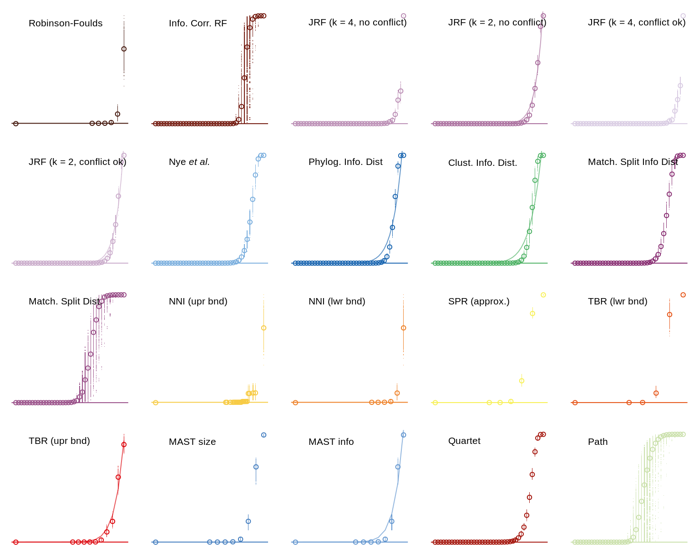
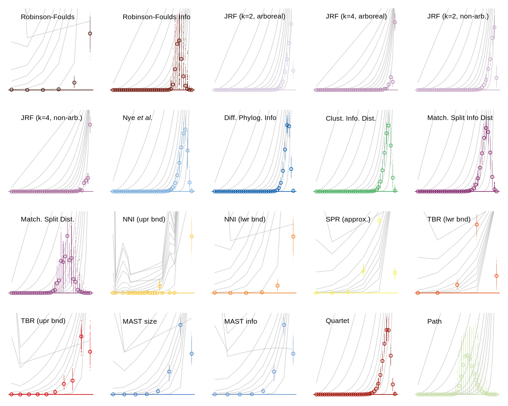
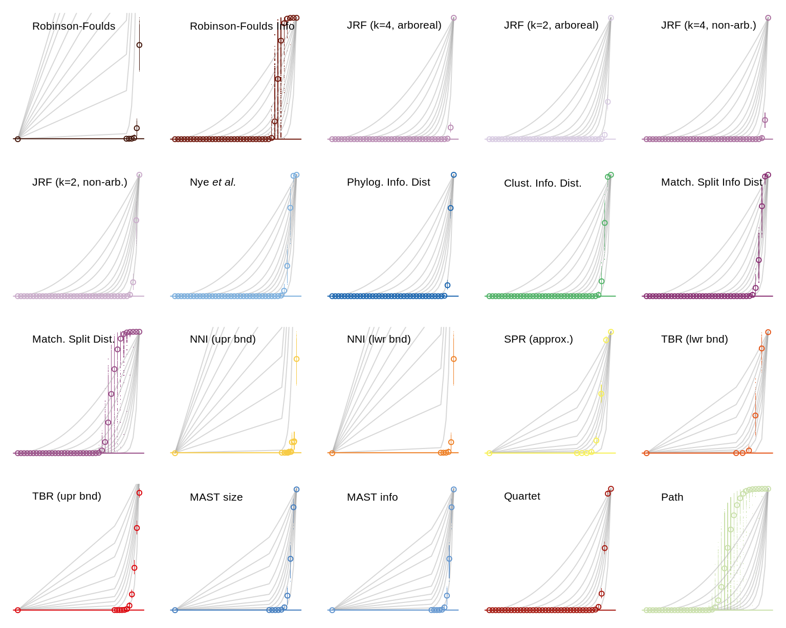
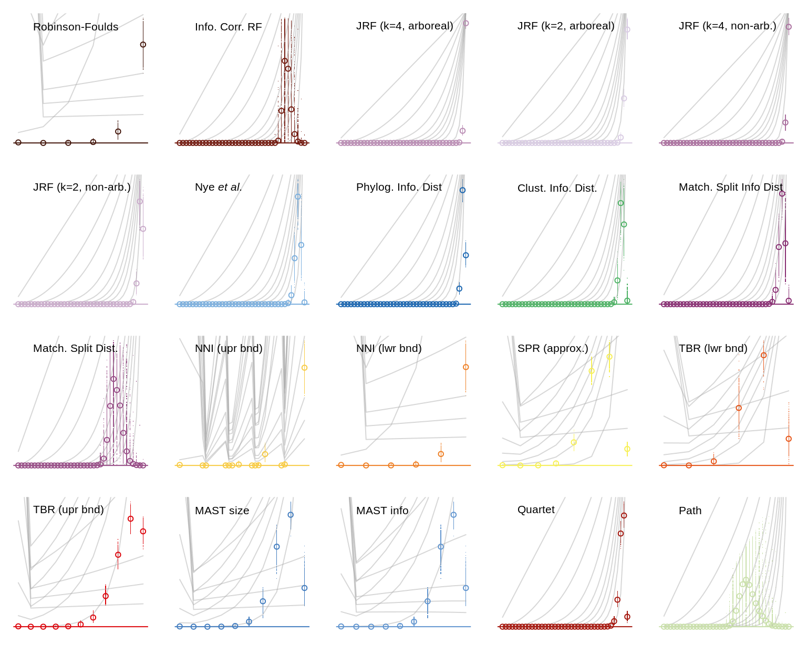

## Warning: package 'spatstat' was built under R version 3.6.3## Loading required package: spatstat.data## Loading required package: nlme## Loading required package: rpart##
## spatstat 1.63-2 (nickname: 'I'm sorry Dave, I'm afraid I can't do that')
## For an introduction to spatstat, type 'beginner'##
## Note: R version 3.6.2 (2017-01-27) is more than a year old; we strongly recommend upgrading to the latest version20-leaf trees, K function (Wiegand & Moloney, 2004)

20-leaf trees, O ring (Wiegand & Moloney, 2004)

Plots are essentially the same with fifty leaves:
50-leaf trees, K function (Wiegand & Moloney, 2004)

50-leaf trees, O ring (Wiegand & Moloney, 2004)

Wiegand, T., & Moloney, K. A. (2004). Rings, circles, and null-models for point pattern analysis in ecology. Oikos, 104(2), 209–229. doi: 10.1111/j.0030-1299.2004.12497.x